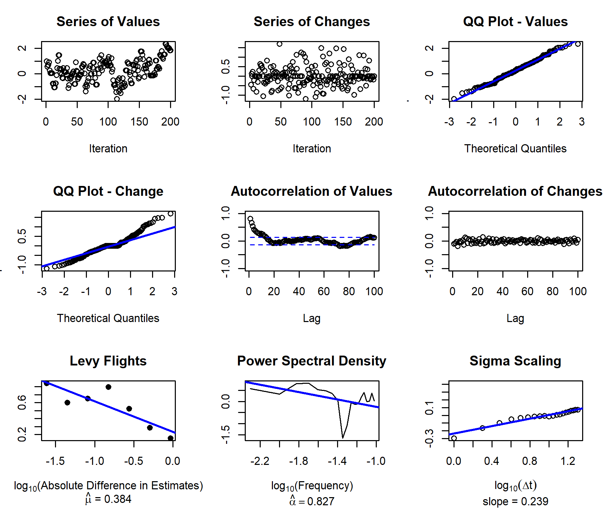
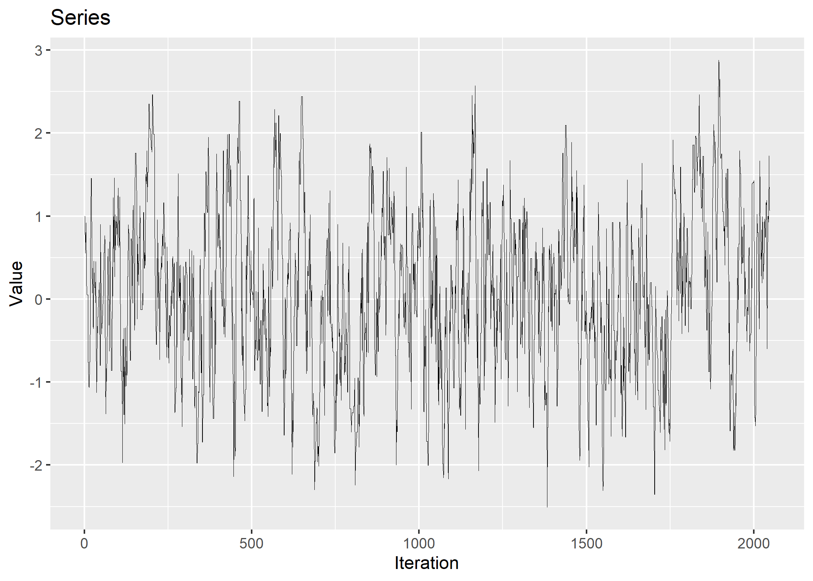

The goal of samplr is to provide tools to understand human performance from the perspective of sampling, both looking at how people generate samples and how people use the samples they have generated. A longer overview and other resources can be found at sampling.warwick.ac.uk. Get started here.
Installation
You can install the released version of SampleR from Github with:
Installing on MacOS
If installing on MacOS, you will need the following prior to installation:
- Apple’s ‘Command Line Tools’: these can be (re-)installed by running
xcode-select --installin a terminal. You may also check if those are already installed by runningpkgbuild::check_build_tools()in R. - A Fortran compiler. Installers for gfortran are available here. This installs into
/usr/local/gfortran.
Read more about it on the macOS Prerequisites section in the R Installation and Administration Manual.
Example
samplr provides tools to generate samples following particular algorithms
library(samplr)
set.seed(1)
chain <- sampler_mh(start = 1, distr_name = "norm", distr_params = c(0,1), sigma_prop = diag(1) * .5, iterations = 2048)
print(chain[[1]][1:20])
#> [1] 1.00000000 0.55703026 0.68688570 0.68688570 0.91988288 0.26328684
#> [7] 0.05488801 0.05081000 0.05081000 0.05081000 -0.76070605 -0.76070605
#> [13] -1.05168815 -1.06313640 -0.75506178 -0.75506178 -0.10524665 0.44780723
#> [19] 1.01645509 1.45473808As well as tools to diagnose the patterns both from samplers and participants:
plot_qqplot(chain[[1]], change = TRUE)
plot_series(chain[[1]])